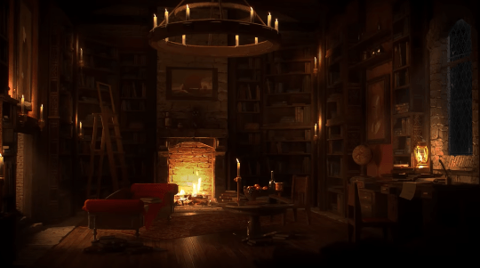

Welcome, weary traveler, to Remington's Shadow Manor—a sanctuary enveloped in mystery and dark elegance. Hidden deep within a timeless forest, our manor stands as a tribute to the enigmatic and the arcane, where shadows weave and whispers of forgotten tales echo through the halls.
Here, the air is infused with the rich scent of aged wood and the haunting bloom of nightshade. Each room, adorned with velvet drapes and gothic chandeliers, offers a glimpse into the manor’s storied past. As you wander our corridors, you may encounter spectral echoes of past guests, forever entwined with the fabric of this grand estate.
At Remington's Shadow Manor, we invite you to embrace the enchantment of the night. Allow the flickering candlelight to guide you, the haunting melodies of the grand piano to serenade you, and the tranquil gardens under the moon’s gaze to offer you solace and wonder.
May your stay be filled with intrigue, a touch of the uncanny, and the allure of the unknown. Welcome to a realm where the shadows hold secrets, and every corner of the manor whispers a story waiting to be discovered.
Welcome to Remington's Shadow Manor, where the night comes alive.